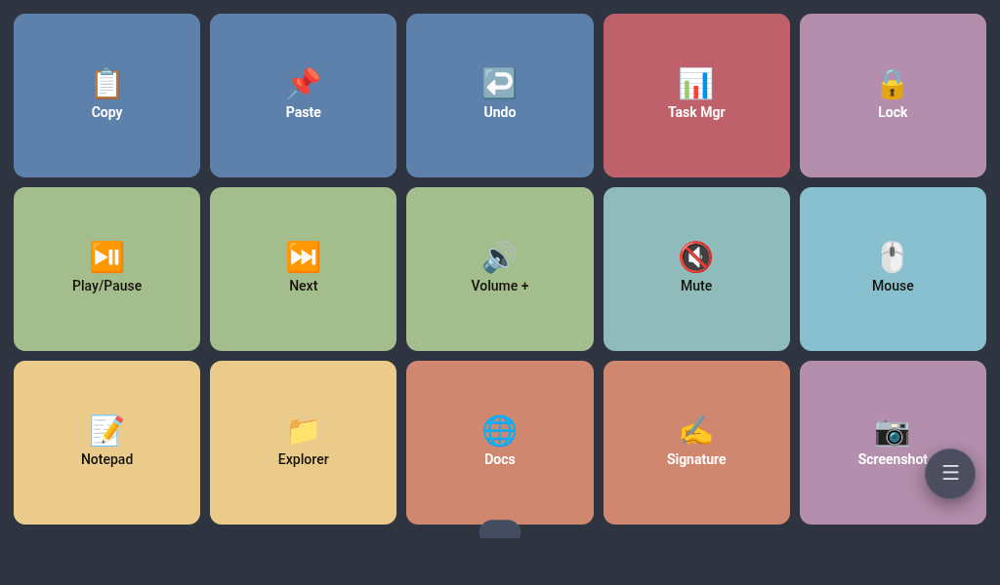
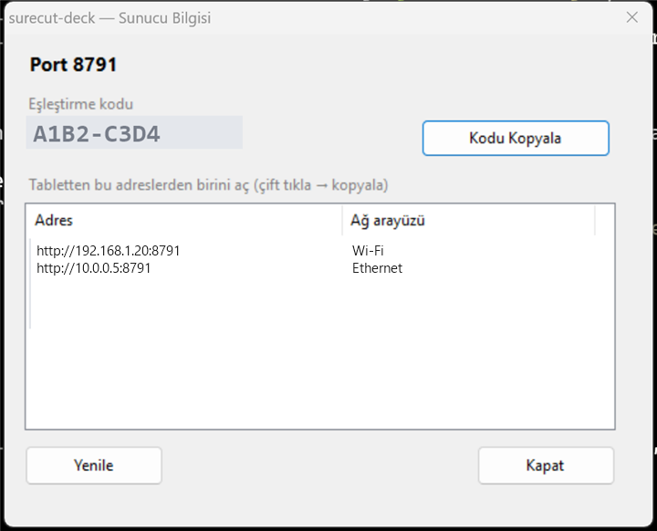
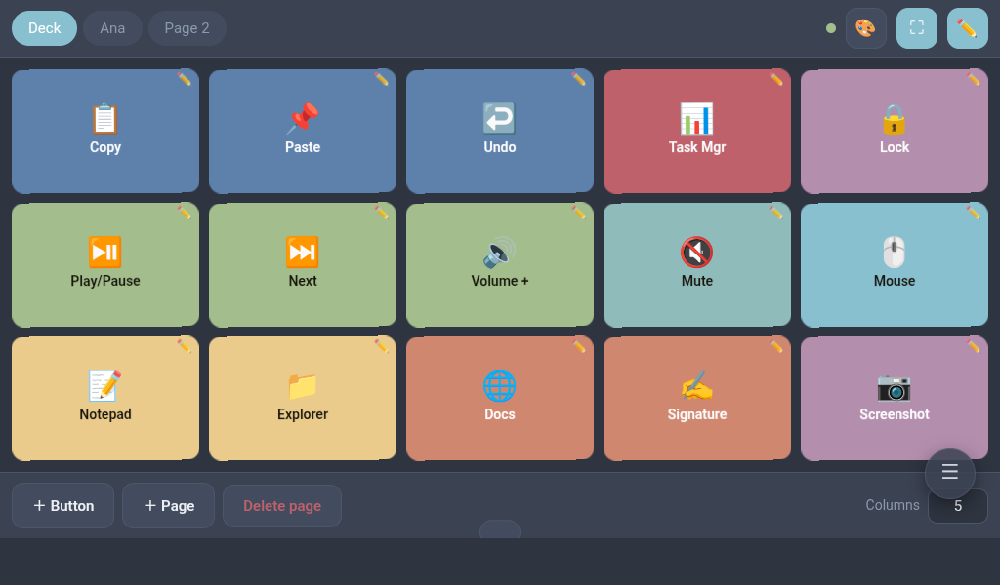
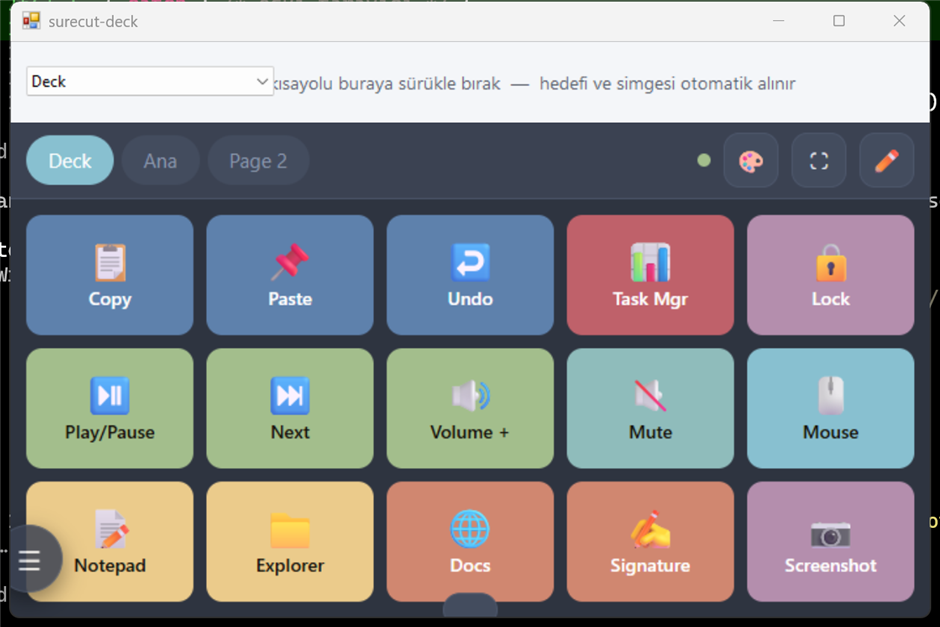
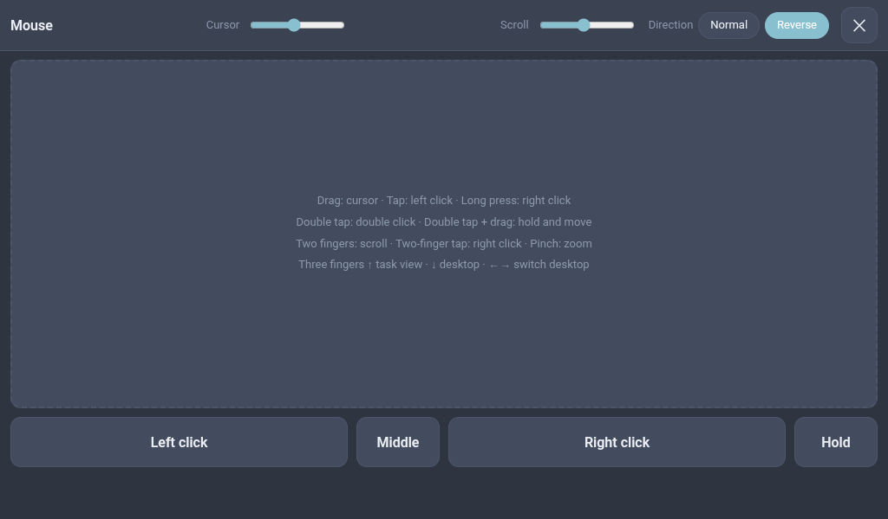
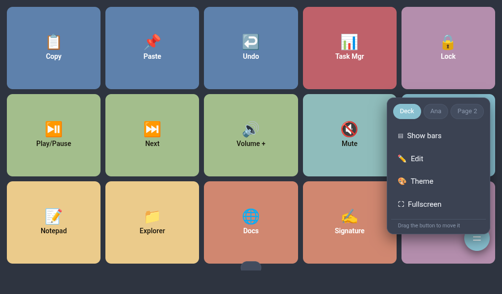
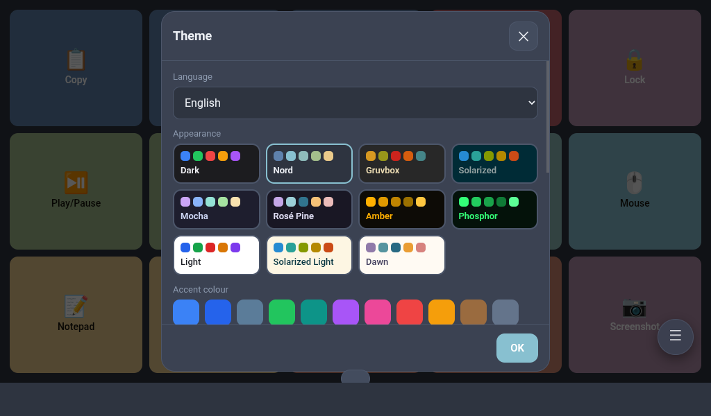
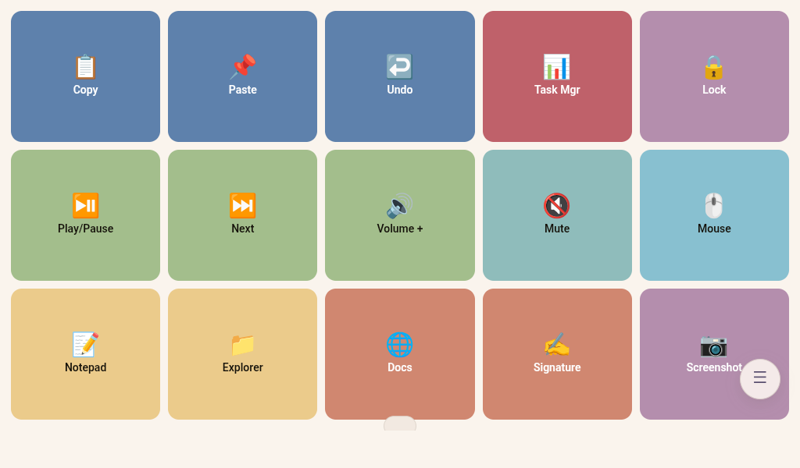

میزبانی خودی · بدون فروشگاه برنامه · چیزی از شبکهٔ شما بیرون نمیرود
Surecut Deck یک سرور کوچک روی رایانهٔ ویندوزی شما اجرا میکند و رابط خودش را خودش ارائه میدهد. تبلت فقط یک نشانی وب باز میکند — نه برنامهای برای نصب، نه حسابی برای ساختن، و نه ابری در میانه.

چگونه کار میکند
سه گام، یک بار.
start.cmd را اجرا کنید. نمادی در سینی سیستم پدیدار میشود و همانجا میماند. هر وقت خواستید روی آن کلیک کنید تا اطلاعات جفتسازی را ببینید یا ویرایشگر را باز کنید.
پنجرهٔ سرور همهٔ نشانیهایی را که رایانهتان از آنها در دسترس است فهرست میکند. یکی را در مرورگر تبلت بنویسید، سپس کد جفتسازی کنارش را وارد کنید.

برای تمامصفحه ⛶ را بزنید، یا از افزودن به صفحهٔ خانه در مرورگرتان استفاده کنید. در تمامصفحه، تبلت هم تا وقتی کنسول باز است بیدار میماند.
نمادها
ویرایشگر شبکهای از نمادها دارد، پس هرگز لازم نیست شکلک را دستی بنویسید. برای برنامهها چیز بهتری هست: میانبر را از میزکار بکشید و بیندازید تا نماد واقعی برنامه هم با آن بیاید.

میزکار
ویرایشگر را از نماد سینی باز کنید: پنجرهای واقعی روی میزکار با همان رابط در درونش ظاهر میشود. یک میانبر، برنامه، پوشه یا پرونده را روی نوار بالا رها کنید — مقصد شناسایی میشود، نماد برنامه بیرون کشیده میشود، و دکمه بیدرنگ روی تبلت پدیدار میگردد.

صفحهٔ مقصداینجا رها کنیدنشانگر
به یک دکمه کنش موشواره بدهید؛ با فشردنش تمام تبلت به یک صفحهلمسی بدل میشود. دو لغزنده سرعت نشانگر و پیمایش را تنظیم میکنند، و جهت پیمایش را میتوان مطابق عادت خودتان وارونه کرد.

| اشاره | نتیجه |
|---|---|
| کشیدن | حرکت نشانگر |
| ضربه | کلیک چپ |
| ضربهٔ دوتایی | دوبار کلیک |
| ضربهٔ دوتایی سپس کشیدن | نگهداشتن دکمهٔ چپ و حرکت — گزینش متن، جابهجایی پنجره |
| فشار طولانی | کلیک راست |
| دو انگشت | پیمایش عمودی و افقی |
| ضربه با دو انگشت | کلیک راست |
| نیشگون | بزرگنمایی |
| سه انگشت ↑ / ↓ | نمای وظایف / نمایش میزکار |
| سه انگشت ← / → | تعویض میزکار مجازی |
فضا
دکمهها را در صفحهها گروه کنید — یکی برای تدوین، یکی برای بازی، یکی برای همان جلسهای که همیشه در آن هستید. برای جابهجایی میان آنها روی کنسول به چپ یا راست بکشید. دکمهٔ شناور حتی وقتی نوارها پنهاناند شما را به صفحهها، ویرایشگر و پوستهها میرساند، و میتوانید هرجا که راحتترید بکشیدش.

ظاهر
بیشتر پوستهها از طرحهای رنگی شناختهٔ برنامهنویسان میآیند — Nord، Gruvbox، Solarized، Catppuccin Mocha، Rosé Pine — بهعلاوهٔ دو ظاهر پایانهای که عمداً دورنگاند و یک روشن و یک تیرهٔ خنثی. با تغییر پوسته، رنگ دکمههایتان با حفظ فامشان به پالت تازه تبدیل میشود: دکمهٔ آبی، آبیِ پوستهٔ تازه میشود و چیدمانتان همانطور خوانا میماند.


صفحه
کشیدن برای پر کردن صفحه باعث میشود ردیفها تمام ارتفاع را تقسیم کنند: دو ردیف دکمه بهجای گذاشتن جای خالی در پایین، صفحه را پر میکنند. پنهانسازی خودکار نوارها نوارهای بالا و پایین را یکسره برمیدارد و فقط دکمهها را میگذارد — دکمهٔ شناور بازشان میگرداند، یا ناحیهای خالی را سه ثانیه نگه دارید.
زبان
رابط به انگلیسی، ترکی، اسپانیایی، فرانسوی، آلمانی، ایتالیایی، پرتغالی، روسی، اوکراینی، لهستانی، عربی، فارسی، اردو، چینی، ژاپنی، کرهای، هندی، بنگالی، اندونزیایی و ویتنامی عرضه میشود. تا وقتی خودتان زبانی برنگزینید از زبان مرورگر پیروی میکند، و عربی، فارسی و اردو چیدمان را راستبهچپ میکنند. انتخاب برای هر دستگاه جداست، پس تبلت و ویرایشگر میزکار میتوانند فرق کنند.